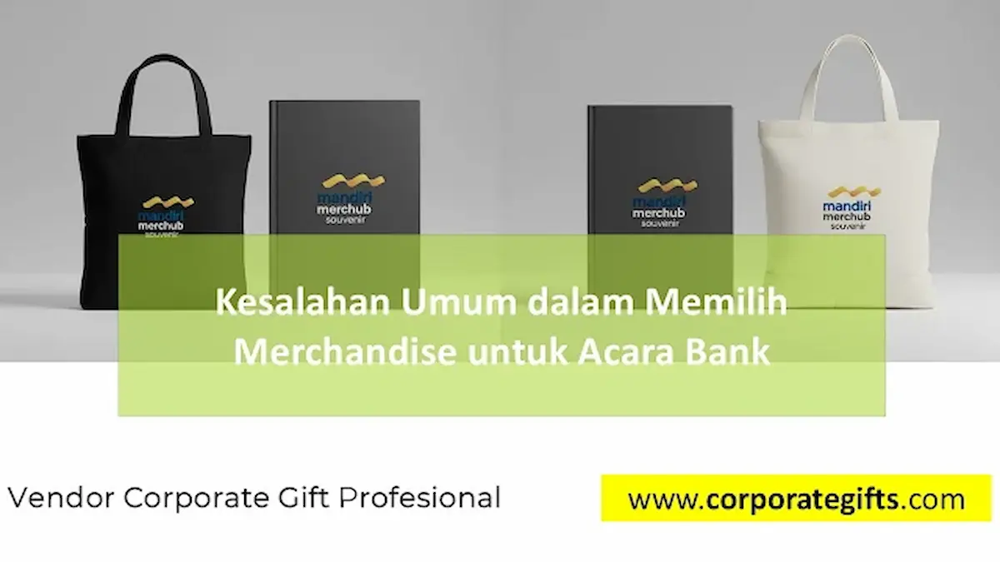

Corporate Gifts ID - Dalam sektor industri perbankan dan jasa keuangan, setiap agenda korporat seperti peluncuran produk wealth management, gathering nasabah prioritas, customer loyalty program, hingga serah terima jabatan (sertijab) pimpinan wilayah membawa nilai simbolis yang sangat tinggi. Di balik atmosfer acara yang formal, pemilihan merchandise memegang peranan krusial sebagai representasi nyata dari integritas, stabilitas, dan profesionalisme institusi perbankan tersebut.
Namun, sering kali panitia event atau bagian procurement terjebak pada kesalahan-kesalahan umum yang tanpa disadari justru menurunkan persepsi prestise bank di mata nasabah dan mitra bisnis. Melalui kemitraan terpercaya bersama Corporate Gifts ID, kami merangkum evaluasi mendalam agar institusi perbankan Anda terhindar dari kekeliruan fatal dalam pengadaan cinderamata korporat.
Poin Kunci Kesalahan Merchandise Bank:
- Miskoneksi Konteks Acara: Memberikan barang terlalu kasual pada acara protokoler direksi atau nasabah private banking.
- Inkonsistensi Brand Guidelines: Deviasi warna logo, resolusi grafis buram, atau kesalahan tipografi standar bank.
- Kompromi Mutu demi Harga Murah: Produk berdaya tahan rendah yang mudah rusak dan merusak persepsi kualitas layanan bank.
- Kemasan Asal-asalan: Kotak tanpa bantalan busa presisi yang menghilangkan unsur eksklusivitas saat unboxing.
- Manajemen Waktu yang Mepet: Keterlambatan order yang memangkas fase proofing sampel fisik dan quality control (QC).
Peran Vital Merchandise dalam Menjaga Reputasi Perbankan
Lembaga perbankan menjual produk berbasis kepercayaan (trust). Oleh sebab itu, setiap artefak fisik yang keluar dari bank dan diterima oleh publik harus memancarkan aura ketelitian, keamanan, dan keandalan yang tinggi.
Merchandise yang dipilih secara tepat berfungsi sebagai alat diplomasi bisnis yang memperkokoh loyalitas nasabah dan memelihara hubungan baik dengan regulator maupun mitra korporat.
7 Kesalahan Umum Pengadaan Merchandise Acara Bank
Berikut evaluasi rinci mengenai 7 kesalahan yang paling sering terjadi di divisi pengadaan acara perbankan:
1. Mengabaikan Relevansi dan Tingkatan Acara
Memberikan cangkir plastik atau tas serut tipis dalam acara serah terima jabatan pimpinan cabang atau temu nasabah prioritas adalah kekeliruan besar. Acara formal membutuhkan cinderamata berbobot seperti executive director set atau plakat etsa kuningan, sementara acara family gathering santai lebih cocok menggunakan apparel polo shirt katun bordir.
2. Tidak Konsisten dengan Identitas Visual (Brand Guidelines)
Warna biru Bank Mandiri, hijau Bank Syariah Indonesia (BSI), atau biru navy Bank BCA memiliki kode Pantone spesifik. Kesalahan umum terjadi saat vendor mencetak warna dengan mesin sablon manual tanpa kalibrasi akurat sehingga warna logo tampak meleset jauh dari pakem resmi.
3. Mengorbankan Kualitas demi Menekan Anggaran (False Economy)
Memilih vendor yang menawarkan harga paling murah tanpa sampel fisik sering kali berujung pada barang bermutu rendah: pulpen yang macet saat dipakai, powerbank tanpa proteksi sertifikasi baterai, atau tumbler stainless yang bocor. Hal ini secara langsung merusak citra reputasi bank yang terkenal prima.

Pemeriksaan kualitas ketat (Quality Control) terhadap presisi logo dan kekokohan kotak kemasan sebelum didistribusikan ke cabang bank.
4. Tidak Memperhatikan Keseimbangan Fungsi dan Estetika
Barang pajangan murni yang tidak memiliki kegunaan praktis sering kali berakhir di laci dan dilupakan. Pilihlah produk yang fungsional menemani aktivitas kerja harian eksekutif, seperti buku agenda kulit deboss, flashdisk kartu chip original, atau smart tumbler sensor suhu.
5. Mengabaikan Isu Keberlanjutan Lingkungan (Prinsip ESG)
Saat ini seluruh sektor keuangan diwajibkan menerapkan prinsip ESG. Membagikan souvenir berbahan plastik sekali pakai yang mencemari lingkungan bertentangan dengan komitmen green banking. Beralihlah ke material bambu, stainless SUS304 daur ulang, atau tas jinjing berbahan blacu kanvas premium.
6. Menyepelekan Kualitas Kemasan Luar (Packaging)
Cinderamata berharga mahal akan langsung kehilangan kemewahannya jika diserahkan hanya dalam kantong plastik mika kresek. Kemasan hardbox rigid bermagnet dengan tatakan busa EVA beludru adalah standar mutlak untuk cinderamata perbankan kelas eksekutif.
7. Terlambat Menunjuk Vendor dan Waktu Produksi yang Terburu-buru
Proses administrasi B2B pengadaan bank memerlukan waktu pembuatan surat penawaran, e-Faktur PPN, persetujuan sampel (proofing), hingga uji coba cetak. Menunda order hingga H-7 acara menyebabkan pilihan produk menjadi terbatas dan risiko cacat produksi meningkat drastis.
Tabel Matriks: Kesalahan Fatal vs Solusi Pengadaan Bank
Tabel komparasi berikut menjadi panduan mitigasi praktis bagi panitia pengadaan souvenir perbankan:
| Aspek Evaluasi | Kesalahan yang Sering Terjadi | Solusi Standar CorporateGifts.ID | Dampak Positif bagi Bank |
|---|---|---|---|
| Relevansi Acara | Souvenir kasual pada acara formal sertijab | Segmentasi paket: VIP Gift Box vs Mass Merchandise | Menjaga wibawa acara dan rasa hormat audiens |
| Akurasi Warna | Warna logo melenceng dari standar brand | Kalibrasi Pantone digital UV print & proofing fisik | Memperkuat identitas visual resmi perbankan |
| Kualitas Barang | Memilih harga termurah tanpa uji coba fungsi | Material bersertifikasi (Food-grade, baterai UL/CE) | Menghindari komplain nasabah dan kerusakan dini |
| Unboxing Experience | Hanya dibungkus plastik mika tipis | Custom rigid hardbox lapis beludru & pita korporat | Memberikan impresi mewah sejak pandangan pertama |
| Timeline Pengadaan | Pemesanan mendadak mendekati hari-H | SOP perencanaan terstruktur H-30 hari kalender | Proses administrasi B2B, audit dinas, dan QC lancar |
Menjaga Konsistensi Brand Guidelines dan Palet Warna
Konsistensi identitas visual merupakan pondasi reputasi perbankan. Saat melakukan kustomisasi pada media berbahan logam, kulit, atau kain, teknik pencetakan harus dipilih secara cermat:
- Grafir Laser pada Logam: Menghasilkan warna kontras monokrom yang elegan pada pulpen atau tumbler stainless tanpa risiko terkelupas.
- Deboss/Emboss pada Kulit: Memberikan tekstur timbul tenggelam yang mewah pada buku agenda dan dompet kartu tanpa merusak permukaan bahan.
- Cetak UV High-Resolution: Menjamin ketajaman gradasi warna logo korporat pada permukaan datar powerbank atau USB card dengan akurasi 99%.
Integrasi Prinsip Keberlanjutan (ESG) pada Cinderamata Bank
Menghadirkan produk ramah lingkungan bukan lagi sekadar tren, melainkan tuntutan kepatuhan industri finansial global. Memilih tumbler vacuum SUS304 tahan lama yang dapat dipakai harian bertahun-tahun mencerminkan komitmen nyata bank dalam mengampanyekan gaya hidup bebas sampah plastik.
Kesimpulan
Merchandise acara perbankan adalah duta visual dari reputasi institusi keuangan Anda. Menghindari kesalahan seperti pemilihan barang yang tidak relevan, pengabaian standar warna logo, dan pengorbanan kualitas demi harga murah akan memastikan setiap dana anggaran yang dikeluarkan memberikan imbal hasil optimal terhadap citra profesional perusahaan.
Percayakan pengadaan merchandise bank dan gift set eksekutif Anda kepada tim kurator berpengalaman di Corporate Gifts ID untuk mendapatkan pelayanan komprehensif mulai dari konsultasi desain hingga administrasi faktur pajak resmi.
Pertanyaan Seputar Merchandise Acara Bank (FAQ)

Ditulis oleh: Sholikhatun Nikmah
Creative Product Designer & Bespoke PackagingDesainer visual dan spesialis kemasan kreatif di CorporateGifts.ID dengan fokus pada personalisasi visual mockup 3D, kurasi seminar kit, souvenir perbankan, dan bespoke gift set korporat.
Lihat Profil Lengkap & Panduan Lainnya